Tek Dokunuşla Arıza & Duruş Bildirimi
Operatörler el terminallerinden veya HMI panellerinden tek dokunuşla duruş tipi ve arıza kodu seçer. Sistem duruş kronometresini anında başlatır.

Dijital Üretim ve Enerji Yönetimi
Hammadde girişinden mamul çıkışına, kalite kontrolden enerji takibine kadar fabrikanın tam entegre dijital ikizi.
A, C ve D Bloklarındaki tüm pres ve dilme hatlarının tek ekrandan 360° anlık izlenmesi

Tema Metal'in dijital dönüşüm yolculuğuna teknoloji ortağı olmaktan gurur duyuyoruz.
Hammaddeden nihai ürüne — her adım dijital, her veri doğrulanmış, her enerji ölçülebilir.